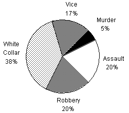

DISTRIBUTION OF CRIMINAL ACTIVITY BY CATEGORY OF CRIME FOR COUNTRY X IN 1990 AND PROJECTED FOR 2000.
Criminal Population: 10 million (in yr. 1990)

Criminal Population: 20 million (in year 2000 (Projected))
From 1990 to 2000, there is a projected decrease in the number of criminals for which of the following categories?
I. Vice
II. Assault
III. White Collar
|
Category |
Number in 1990 (millions) |
Number in 2000 (millions) |
Projected increase (millions) |
Projected decrease (millions) |
|
Vice |
1.7 |
3 |
1.3 |
None |
|
Assault |
2 |
4 |
2 |
None |
|
White Collar |
3.8 |
6 |
2.2 |
None |
As the table displays, there is a projected increase (not
decrease) in all three categories.
Hence, the answer is
(A).